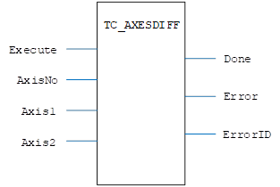
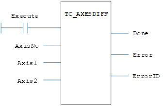

Motion Function.
The TC_AXESDIFF command is used to configure the monitoring of 2 axes performed on an axis with ATYPE=85. An axis of ATYPE=85 will produce an FE output based on the difference between MPOS of ‘axis2’ subtracted from MPOS of ‘axis1’, a DAC output will also be produced.
If operation of the FE_LIMIT and FE_RANGE is required, set AXIS_MODE bit 13 to 1. With that set, bits 1 and 8 in AXISSTATUS will respond when FE falls outside the limits set.
The specified axis can be any axis and does not have to physically exist in the system
|
Execute : BOOL; |
Rising edge requests execution |
|
AxisNo : USINT; |
Monitor Axis number |
|
Axis1 : USINT; |
First Axis to monitor |
|
Axis2 : USINT; |
Second Axis to monitor |
|
Done : BOOL; |
TRUE when function has completed normally |
|
Error : BOOL; |
TRUE if a program error is detected |
|
ErrorID : UINT; |
Returned error number |
When the Execute input changes from FALSE to TRUE (rising edge), the function block issues the command for execution in the velocity profile software. An axis of ATYPE=85 will produce an FE output based on the difference between MPOS of ‘axis2’ subtracted from MPOS of ‘axis1’, a DAC output will also be produced.
When the monitor axis ATTPE is not 85, the error output is set and the error ID number 153 is returned.
The axis of the monitor and the axis of the two monitored axes should be different, otherwise the error output is set and the error id number (errorid = 19) is returned.
For the Error ID reference, see the Trio Programming error list.
MyTC_AXESDIFF(Execute, AxisNo, Axis1, Axis2);
Done:= MyTC_AXESDIFF.Done;
Error:= MyTC_AXESDIFF.Error;
ErrorID:= MyTC_AXESDIFF.ErrorID;


Not available.
TrioBasic Error List